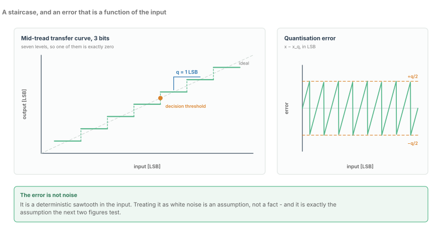
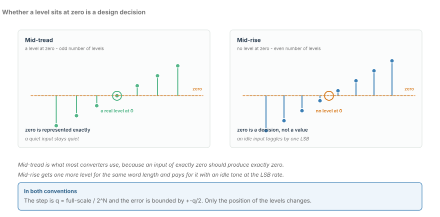
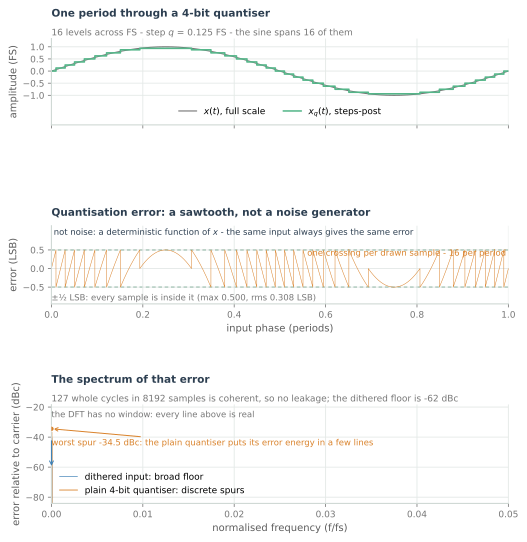
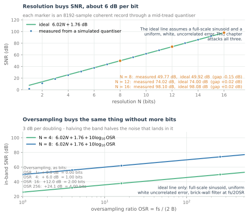
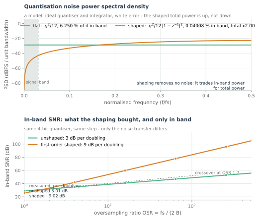

Quantization, SNR and ENOB
An ideal 12-bit ADC does not give you 12 bits. Where the 6.02N + 1.76 formula comes from, and what actually eats it.
The last chapter stopped at the moment a continuous voltage becomes a list of numbers. It said quantisation is bounded, roughly uncorrelated, and can be averaged down — three claims it had no room to justify.
Those claims underwrite every link budget in the optical world, so they are worth the room. The assumption to demolish is one sentence long: an $N$-bit converter gives you $N$ bits.
It does not. An 8-bit ADC running at 128 GSa/s into 64 GHz of analogue bandwidth delivers 5.5 effective bits. Where the other 2.5 went is this chapter.
The staircase

An ideal quantiser is a staircase. The input runs continuously; the output takes one of a fixed set of levels, the nearest one. Everything below follows from that geometry.
Three quantities define it. The step size $q$ — one least-significant bit — is the spacing between adjacent levels. The level count comes from the word length: $N$ bits gives $2^N$ codes. Full scale $\mathrm{FS}$ is the input span the converter handles. So
At 8 bits over 1 V, $q$ is 3.9 mV, or 0.39% of full scale. At the 5.5 effective bits a real 128 GSa/s part delivers, $2^{5.5} \approx 45$ levels and the step is 2.2% of full scale.
Figure 1 draws the staircase in LSB units, so the step is exactly one — adopt that convention permanently. Resolution is not an abstract property of a converter; it is how many steps fit across the signal.
Mid-tread and mid-rise
Two conventions lay that staircase over the input range, and they differ only in where the levels sit relative to zero.

A mid-tread quantiser has a level at zero: levels $0, \pm q, \pm 2q, \ldots$, an odd count. A mid-rise quantiser has none: levels $\pm q/2, \pm 3q/2, \ldots$, an even count. Both have the same step and the same ±q/2 error bound. Only the position changes.
Mid-tread is what almost every converter uses. Two's complement makes zero a code, so the transfer curve is symmetric and needs no offset correction; the arithmetic downstream can assume zero in gives zero out; and an idle channel reads as a clean zero rather than a square wave.
The consequence for small signals is not boring. A mid-tread quantiser is dead inside $\pm q/2$: every input in that window maps to the same output, so anything smaller than half a step is not represented. For an optical front end, where an idle tributary must read as zero for the AGC and the slicer, that is usually what you want. But it is a real nonlinearity: at 5.5 bits the dead zone is $\pm 1.1\%$ of full scale, which is not a rounding error, it is the size of a small signal.
A mid-rise quantiser has no dead zone, keeps one more level for the same word length, and pays with a half-LSB offset: zero in produces $\pm q/2$ out, so it never returns exactly zero and an idle input toggles at the LSB rate. Its virtue is measuring a signal that genuinely lives near zero, where an offset is easier to subtract than a dead zone is to fill.
The judgement is mid-tread, always, for a bipolar receiver. The dead zone sits at the one input value a decision-directed DSP treats as sacred, and a converter that cannot tell $+0.1$ LSB from $-0.1$ LSB has quietly thrown away information the slicer needs.
The error is not noise
Call the error $e = x - x_q$: what the input had and the output did not. Figure 1's right-hand panel draws it. The error is not random. It is a deterministic function of the input, a sawtooth sweeping from $+q/2$ to $-q/2$ and jumping back, once for every step the input crosses.

Because the transfer curve rounds to the nearest level, the error is bounded:
That bound needs no assumptions. Everything that follows costs one.
The familiar $q^2/12$ error power comes from three, and they fail separately:
- The error is uniformly distributed over $[-\frac{q}{2}, +\frac{q}{2}]$. A uniform distribution of width $q$ has variance $q^2/12$.
- The error is uncorrelated with the signal, so signal and error power add rather than interfere.
- The error is white, with a flat power spectral density and no memory between samples.
For a sine at low resolution all three are false, for the same reason: the error is a function of the signal. Its distribution is not uniform, because the sine lingers near its turning points and the error lingers with it — figure 3's 4-bit simulation gives an error rms just over 0.30 LSB, against the $1/\sqrt{12} = 0.289$ that uniformity predicts. It is maximally correlated with the signal, because it is computed from it. And a periodic error has a line spectrum, not a flat one.
Figure 3's bottom panel is the practical consequence. A plain 4-bit quantiser fed a coherent sine puts its error energy into discrete spurs; the same quantiser fed the sine plus a small dither has a floor with no spur above it. Those spurs are the spectrum of a deterministic distortion, and a wideband signal sees them as intermodulation.
At five effective bits the specification that matters is spurious-free dynamic range, not SNR. The $6.02N + 1.76$ figure below describes a converter whose error has been assumed into whiteness; a real 5-bit converter at full scale can have its worst spur 30 dB below the carrier while its integrated noise sits lower still. Spurs do not average down with longer records, and no equaliser adapts them away. Design the link to the spur.
Where 6.02N + 1.76 comes from
Now the arithmetic, with the input assumption stated rather than hidden.
The algebra is four substitutions: full scale over the code count, a twelfth of the step squared, and a full-scale sinusoid of power $\mathrm{FS}^2/8$. Divide, and the step cancels — which is why the result is a function of word length, not of the converter.
The input assumption is the strong one. Full-scale sinusoid means peak-to-peak exactly the converter's span, with no AGC backoff, no crest factor and no headroom. Lose 3 dB of it and the SNR falls by 3 dB.
The 1.76 dB is not a converter property. A signal filling the range uniformly has power $\mathrm{FS}^2/12$ and gives exactly $6.02N$; a sine's power is 1.5 times that, because a sine spends most of its time away from its peaks. The constant is a crest-factor credit, and any signal with a worse crest factor gets less of it.
Figure 4 puts the line against a simulated quantiser.

The simulated 8-bit point lands about 0.15 dB under the ideal 49.9 dB, and the gap widens as resolution falls: half a dB at 5 bits and more than 2 dB at 2 bits. That is the uniform-error assumption degrading exactly where this chapter says it does. The direction of the error makes the formula safe: it is asymptotic and optimistic, so use it as a budget line and never as a datasheet claim.
| $N$ | $6.02N + 1.76$ | what it corresponds to |
|---|---|---|
| 4 | 25.8 dB | a low-resolution front end, spurs dominate |
| 5.5 | 34.9 dB | a real 128 GSa/s ADC, at full scale, no backoff |
| 8 | 49.9 dB | the nominal label on that same part |
| 12 | 74.0 dB | a good 1 GSa/s instrument converter |
| 16 | 98.1 dB | audio, where $N$ means something |
The message is the gap between the second and third rows: the label says 8, the physics says 5.5, and the formula prices that at 15 dB.
Dither: making the assumptions true
The three assumptions are not laws of nature. They are properties of the error, and the error is a function of the input.
Add a small random signal before the quantiser, and the error's distribution, correlation and spectrum all change. A triangular (TPDF) dither of about one LSB is the classic choice: the smallest whose amplitude makes the error's mean and variance independent of the signal, which is exactly what the $q^2/12$ derivation needs. It costs the dither's own power, which adds to the error power in band.
What dither does not do is remove error energy; it redistributes it. Figure 3's bottom panel is the demonstration: with a deliberately quiet dither the in-band error power is unchanged to within a tenth of a dB, while the worst spur falls to a floor nearly 30 dB below where it was. The total is conserved, the shape is not.
I would not put a dither DAC in front of a 128 GSa/s converter. At those rates the dither source is another analogue block in the signal path, adding noise, power and a calibration problem, to prettify the spectrum of a signal whose spurs the FEC is already correcting. Where dither earns its place is inside the DSP, on truncated coefficient and accumulator words, where it costs a few gates and turns a limit cycle into a floor.
Oversampling
Oversampling attacks from the other side. Sample far faster than the signal bandwidth requires, and the same total error power $q^2/12$ spreads over a proportionally wider band. A digital filter then removes everything above the signal band:
An OSR of 256 buys 24.1 dB — 4.0 bits — for nothing but speed. Figure 4's second panel draws the trade.
Be exact about what changed: the total noise power did not fall. It is the same $q^2/12$, spread thinner and then filtered. Oversampling does not clean the error up; it moves most of it out of band and lets you throw that part away.
It also only works on noise. A spur from a deterministic error sits at a specific frequency; changing the sample rate relocates it rather than spreading it. That is why oversampling helps a converter with a poor noise floor far more than one whose limit is a third harmonic.
The price is rate, and at the top of the range it is brutal. The rate needed is $f_s = 2B \cdot \mathrm{OSR}$ where $B$ is the signal bandwidth. For audio, $B = 20$ kHz and an OSR of 256 asks for 10.24 MSa/s — a part you can buy for a dollar. For a 64 GBd optical link, $B$ is tens of gigahertz and the same OSR asks for tens of terasamples per second, three orders of magnitude past the state of the art.
Oversampling is the cheapest bit in signal processing and the one an optical receiver can never afford. That is a statement about where the bandwidth is spent.
Noise shaping
The oversampling benefit can be had without the oversampling ratio, by shaping the error instead of widening the band.
Put the quantiser inside a feedback loop that subtracts the error it makes, and the error's transfer function is no longer flat. For a first-order loop it is $1 - z^{-1}$, with magnitude squared
Small at DC, rising to four at Nyquist. The loop has not reduced the error; it has pushed it to frequencies the signal does not occupy, where the decimation filter removes it.

The slopes are the headline. Unshaped noise in a band that halves gains 3.01 dB per doubling of OSR; first-order shaped noise gains 9.03 dB, because both the band and the in-band part of the rising spectrum shrink. Measured off figure 5's curves, the two come out at 3.01 and 9.02 dB per octave. A second-order loop would give 15 dB per doubling, at the cost of a stability problem and a much harder analogue loop.
The point readers miss is the first panel. Integrating the shaped spectrum to Nyquist gives exactly twice the flat one: first-order noise shaping increases total noise power by 3.0 dB while reducing in-band noise power. It trades total power for spectral placement, which is why the crossover matters. At 4 bits and OSR 16 the flat quantiser gives 40.9 dB in band and the shaped one 59.8 dB — 19 dB from the same converter and the same step, paid for with 3 dB of total power the filter throws away. Below an OSR of 1.66 the shaping is not worth its own penalty.
At 64 GHz this is not a converter architecture, it is a DSP technique. A first-order loop needs the quantiser and its feedback path to settle inside a fraction of a 64 GHz clock period, which is a physics problem rather than a layout one. The same mathematics reappears downstream, in truncated accumulators and FFT stages, where error feedback instead of round-to-nearest buys the same 9 dB per octave with no analogue loop at all.
ENOB: the number that is actually delivered
The number a link budget needs is the effective number of bits, defined through the measurement a datasheet actually makes:
SINAD is signal to noise and distortion: signal power over everything else in band, harmonics and spurs included. That is why it is the right quantity. A converter can have a 55 dB noise floor and a third harmonic at $-45$ dBc, and the tone you care about is damaged by the harmonic, not the floor.
The gap between label and ENOB comes from five places, all live at 128 GSa/s.
Clock jitter. A sampling instant that wanders by $\sigma_t$ turns a signal at frequency $f$ into a phase error, giving an SNR of $-20\log_{10}(2\pi f \sigma_t)$. At 100 fs RMS — a good aperture specification — a 32 GHz component is limited to 34 dB and a 64 GHz component to 27.9 dB, the same order as the quantisation floor of a 5.5-bit converter. At these rates the clock is not a supporting component, it is a co-equal limit.
Comparator offset and non-linearity. A 6-bit flash needs 63 comparators, each resolving a fraction of an LSB, and no process gives that away. Differential non-linearity makes the steps unequal, integral non-linearity bends the staircase, and both are exactly the harmonics SINAD counts.
Thermal noise. The sampling network's own $kT/C$ noise is a floor under everything else: 0.29 mV rms at 50 fF and room temperature. With a 0.8 V span at 8 bits the LSB is 3.1 mV, so the sampler alone contributes a tenth of a step.
Interleaving. A 128 GSa/s converter is dozens of cores at a few gigahertz each, and the mismatch between them appears as spurs at $f_{\text{in}} \pm k f_{\text{sub}}$. A static skew of 100 fs between cores at a 32 GHz input is a spur near $-34$ dBc — the level of the 5.5-bit quantisation floor, moving with the input frequency.
And it is not a 1 kSa/s converter. The track-and-hold must acquire a full-scale step in picoseconds, the clock must cross millimetres of silicon with picosecond matching, and the calibration engine is a DSP of its own.
I would buy ENOB with calibration and digital correction, not with comparators. Past about six effective bits the analogue matching needed is beyond what a high-speed process gives away, and the die area is better spent on the loop that cancels the error than on the devices that try not to make it. That is the honest reading of why an 8-bit part delivers 5.5: the last 2.5 bits were never going to survive contact with 64 GHz.
The figure of merit
Two numbers compare converters across speed and resolution. Walden's figure of merit is $P/(2^{\mathrm{ENOB}} \cdot f_s)$ in joules per conversion step; Schreier's is $\mathrm{SNDR} + 10\log_{10}(f_s/2P)$ in dB. Each normalises power by resolution and rate — the admission that the three trade. A 5.5 ENOB part at 128 GSa/s performs $2^{5.5} \times 128 \times 10^{9} \approx 5.8 \times 10^{12}$ conversion-steps per second, so at a respectable 200 fJ per step it burns about 1.2 W and lands near 142 dB on Schreier's scale, against 170-plus for the best slow converters. At 128 GSa/s you are not choosing between eight bits and twelve. You are choosing between bandwidth and everything else, and the bandwidth wins.
What to carry forward
- A quantiser is a staircase. Its step is $q = \mathrm{FS}/2^N$, and every downstream decision is a decision about the size of that step.
- Mid-tread puts a level at zero and a dead zone around it; mid-rise trades the exact zero for one more level. Use mid-tread.
- The error is a deterministic, bounded, signal-correlated sawtooth. $q^2/12$ and a flat floor require three assumptions that a low-resolution sine breaks.
- $6.02N + 1.76$ dB follows from $q = \mathrm{FS}/2^N$, a uniform error and a full-scale sinusoid. The 1.76 dB is the sine's crest-factor credit, not a converter property.
- Dither makes the assumptions true by redistributing error power; oversampling moves it out of band without reducing it; noise shaping moves it out of band while increasing the total.
- ENOB is measured through SINAD. Design to it and ignore the label.
The next chapter takes the decibel for granted a little less than this one did. This chapter used dB for every number in it, and dB is exactly the kind of unit that is obvious right up to the moment it is not.